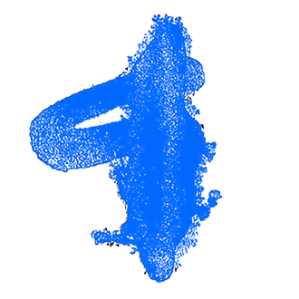
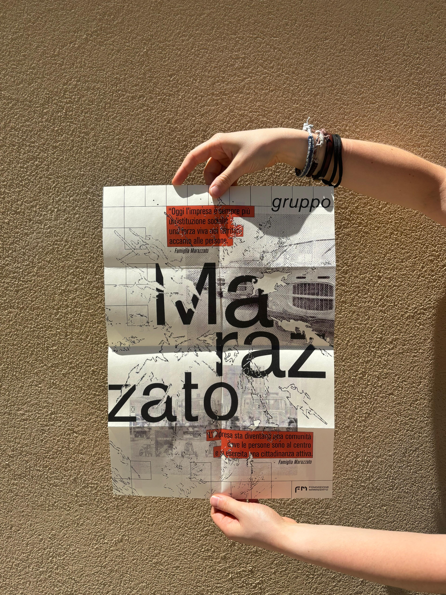

Hi, I'm
Sofia

I design to connect
people, tell stories and give spaces a new life.
Scroll to find out my projects
My latest works


Branding • Digital • service
'NNamo - Urban game
'NNamo, the new Urban Game set in Rome's neighborhoods, was born as an exploration of contemporary urban identity, blending pop graphic language, bold colors, and impactful typography. From route design to missions, communication, and promotion, the project comes to life by fully harnessing the potential of design.
Client
System Design - Corso di Design per la comunicazione visiva, ISIA Roma
Year
2024/2025
Collab.
Giulia Del Core, Enrica Gigliotti, Giulia Moretti, Lorenzo Passacantilli
Brief
An exploration of cultural heritage through the lens of Memory - turning history into a living resource, animated by testimonies, shared experiences, and the dialogue with space, so that a community's story continues to be lived and passed on.
The project
The memory of a place is the thread that connects people to their community. This connection is strongest in small towns, where every space tells stories and reflects collective identity. Reconnecting people to their territory and creating new ways to inhabit and experience these spaces became the core goal of the project, realized through the idea of bringing the village into the city - a village conceived as a network of relationships that can thrive beyond physical boundaries.
The urban neighborhood, imagined as a small village within a larger city, bridges urban and rural contexts. Our research focused on the Garbatella neighborhood, where community and territory interact through well-established forms of participatory life. From the first phase of investigation - interviews, site visits, and the collection of personal stories - emerged the idea of an urban game designed to encourage active interaction between people and their environment.
Open to participants of all ages and backgrounds, the game unfolds across streets, courtyards, and communal spaces. It consists of small missions, accessible via a web app, each acting as a “creative spark” that reactivates the neighborhood's spaces, stories, and relationships. The game is designed to connect, unite, and help participants discover both people and place, blending fun with a touch of friendly competition.


Exhibit • Editorial
Connessioni umane
An ancient space to be revitalized and reimagined through design, offering an active and multi-layered experience that gives due importance to a historically and culturally significant site - rich in potential yet long forgotten within the depths of the Gravina in Matera.
Client
Thesis project - Corso di Design, Università “La Sapienza”, Roma
Year
2024
Collab.
-
Brief
Focus on the case study of the rock-hewn complex of San Falcione, located within the Matera Archaeological and Natural Park of Rock Churches - a site rich in history and cultural value, yet still largely underappreciated.
The project
The project adopts a multidisciplinary approach, combining architectural conservation with the design of educational pathways and carefully planned interventions to offer a fresh and diversified experience of the space. All of this is guided by the goal of revealing a site still in the shadows, enhancing it without altering its essence.
Through a careful analysis of the historical and cultural context, the intervention plan proposes sustainable, minimal, and reversible transformations, designed to dialogue with the identity of the place and create a bridge between past and present.
A central element of the project is community involvement: by integrating local knowledge and daily life, San Falcione is transformed into a living space, where heritage is not only preserved but actively experienced. In this way, the complex becomes more than just a historical site - it becomes an integral part of the community's everyday narrative, a space to explore, understand, and inhabit.


Branding • Illustration • Editorial
Sovana Brand Identity
Brand Identity for the village of Sovana, a little-known place with a thousand-year history that continues to be written in a visual language with rigorous yet irregular forms, as the tuff stone used to build it.
Client
Final design studio in Visual Communication - Università “La Sapienza”
Year
2023/2024
Collab.
Daniele Troiani
Brief
Creation of two books: the first focused on research and analysis, the second on building the brand and its visual identity. Together, they aim to explore, highlight, and convey the deeper values of small, hidden realities that form part of the national artistic heritage.
The project
Nestled in the lush heart of Tuscany's Maremma, the small village of Sovana stands out for its remarkable artistic and archaeological heritage. Its story - spanning from its Etruscan origins to its decline during the Renaissance - is distilled into the logo's design: a dialogue between positive and negative space that hides symbols from these two historical eras.
The brand mark's geometry is subtly altered by the asymmetries of the “negative” palace, while a soft, rounded sans serif typeface adds elegance and balance, echoing the refinement of the village itself.Beyond the logo, the brand system adapts seamlessly to editorial design, wayfinding, and packaging. Each application respects different formats while preserving the identity's distinctive traits and timeless character.
Beyond the logo, the brand system adapts seamlessly to editorial design, wayfinding, and packaging. Each application respects different formats while preserving the identity's distinctive traits and timeless character.
Branding • Advertising • Digital & Web
Taro - A tarot service
A journey to rediscover the ancient tradition of tarot - a guide to building genuine connections with your inner self and with others, and an opportunity to gain deeper awareness of yourself, the people around you, and the world.
Client
Brand Identity, Digital and UX/UI Design - Corso di Design per la comunicazione visiva, ISIA Roma
Year
2024/2025
Collab.
Sofia Biondo, Cecilia Falcone
Brief
Exploring the idea of cultural heritage in a broad way, telling its story, sharing it and enhancing it within a complex and contemporary system.
The project
Taro is a journey to rediscover the tradition of tarot, reinterpreted as a tool for reading the present with renewed awareness. No longer confined to divination, it becomes an instrument of introspection and connection - a bridge between one's inner self and the world.
The project begins with the construction of a clear value-based identity, grounded in three pillars: revelation, confidence, and support. From these principles emerges the visual language, centered around a key graphic device: the frame. In tarot, the frame is the space where symbolic and archetypal stories take shape; in our project, it evolves into a dynamic container, a narrative space for individuals to reflect, interpret, and project their own experiences. In this way, every card becomes an open doorway to an intimate and unique reading of life.
The visual system unfolds across multiple applications: from editorial design to digital platforms, with future possibilities in exhibition and experience design. Each medium preserves the strength of the founding values and the frame as a distinctive element, adapting to different formats and contexts while always maintaining its role: to be a mirror, a space for discovery and connection.
about
My style reflects who I am -
organized and precise, yet always curious and ready to experiment.
profile
My name is Sofia Perrone. Born and raised in Matera, I moved to Rome to explore how to transform ideas into clear and engaging visual narratives. What started as an exploration of one of my greatest passions gradually revealed itself as a way to connect people, tell stories, and breathe new life into spaces.
I studied Design at the University of Rome “La Sapienza” and am continuing my studies at ISIA Rome, focusing more on graphic and communicative design. From my broader education at Sapienza, I carry the curiosity and ability to explore diverse paths: from the elegance of editorial projects to the energy of branding, from the intimacy of small-scale graphics to the immersive world of exhibit design. My style leans toward minimalism: clean lines, balanced compositions, and a constant pursuit of the essential. It reflects who I am - organized and precise, yet always curious and ready to experiment.
Curiosity is my favorite tool. Through it, anything can become a source of inspiration: a poster glimpsed on a city wall, the rhythm of a dance, a detail on a building, the pace of a morning run. Sport, in particular, teaches me movement, timing, and resilience - qualities I bring into my design work. I believe every project is an opportunity to grow, see things from a new perspective, and create connections across disciplines and people.
studies
in progress

Beyond skills and tools, the process matters most to me. I love working with others, exchanging ideas, and building something greater. At the same time, I also enjoy moments of quiet focus, when I can reflect, refine details and give intention to every choice.creative process
01
First contact with the project, it helps me understand the client's real needs and desires. Curiosity and questions are never lacking, as I dig deep to gather as much information as possible.
02
A moment of free exploration and observation: similar projects, historical references, images to set the project mood, colors, shapes. Research is essential to help ideas flow from mind to hand.
03
Pencil in hand, music and a blank sheet of paper: a way to visualize all the ideas that come to mind, select the most convincing ones, organize and make them presentable for a clearer path toward the final choice.
04
Whether working solo or in a team, sharing sketches with colleagues or clients helps to see ideas from another perspective, correct imperfections, and refine details toward the final version.
05
Always on time, even when the workload is heavy: proper file naming, delivering the required formats, collecting client feedback. Never forgetting that every mistake is an opportunity to learn and grow.
06
The moment of realization and seeing both client and personal satisfaction is priceless - a confirmation of well-done work and a reason to celebrate, recharged and ready for the next project.